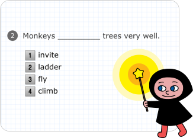
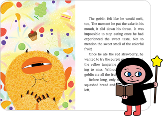
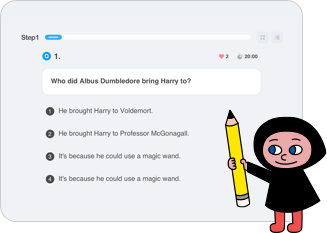
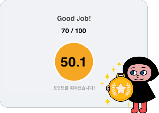

5,000여 권의 콘텐츠를 통해 폭넓게 배우세요.
5,000여 권의 콘텐츠를 통해 폭넓게 배우세요.
리딩게이트는 세계 유명 원서를 eBook과 Movie Book, Book Quiz(pBook)를 통해 학습할 수 있는 온라인 영어 독서 프로그램입니다.
리딩 레벨 측정 Level Test
학습 후 포인트가 부여됩니다. 포인트는 레벨마다 제공되는 레벨업 목표를 달성하기 위해 필요합니다.
영어독서 Reading
학습자의 수준에 맞는 온라인 eBook 또는 종이로 된 영어 원서를 읽습니다.
온라인 학습 Study
읽은 책의 내용을 잘 이해했는지 온라인 학습을 통해 평가해 봅니다.
자동 레벨업 Level Up
학습 후 포인트가 부여됩니다. 포인트는 레벨마다 제공되는 레벨업 목표를 달성하기 위해 필요합니다.
리딩게이트로 영어를 정복한 생생한 활용 수기를 확인해 보세요.
리딩게이트는 EFL(English as a foreign language) 환경의 학생이 온라인에서 효과적인 영어 학습을 할 수 있도록 다양한 콘텐츠를 제공하고 있으며, 각 콘텐츠는 아래와 같이 구성되어 있습니다.
- Pre K: 영어독서를 시작하기 이전 단계의 학생들이 기초 영어를 배우는 과정으로 Alphabet, Phonics, Sight Word 등의 학습과정을 제공합니다.
- e-Book: 해외 유명 도서와 국내 번역 동화를 온라인에서 볼 수 있도록 제공하는 전자책으로 모든 e-Book은 전문 원어민 성우의 음성과 학습을 제공합니다.
- p-Book: 원서에 대한 독후 학습을 이용할 수 있습니다. (원서는 오프라인에서 개별적으로 찾아서 보셔야 합니다.)
- Movie: 일부 e-Book의 내용을 애니메이션으로 제작하여 영어로 된 영상을 재미있게 시청할 수 있도록 제공합니다.
리딩게이트의 레벨은 22단계로 나누어져 있으며 각 레벨 별 수준은 아래와 같습니다. 다만 아래 내용은 일반적인 수준으로 개인 별 차이가 있을 수 있으니 본인에게 적합한 레벨부터 학습을 시작하시는 것이 좋습니다.
로그인 후 학습페이지로 이동하여 프로필(오른쪽 상단 위치)을 클릭하면 레벨테스트를 볼 수 있습니다.
본인의 연령과 영어를 배운 기간을 선택하면 자동으로 적절한 수준의 레벨테스트가 시작되며, 테스트 종료 후 팝업을 통해 결과를 확인할 수 있습니다.
레벨테스트는 정답률에 따라 테스트 단계가 자동 조정됩니다. 따라서 짧게는 10분, 길게는 30분까지 테스트가 진행될 수 있으니 결과를 확인할 때까지 끝까지 테스트를 진행해주세요.
레벨테스트는 학생이 어느 레벨부터 학습을 시작하면 좋을지 추천하는 참고용으로 꼭 결과대로 학습할 필요는 없습니다.
레벨테스트 결과 레벨의 도서가 어려우면 더 낮은 레벨의 도서를, 반대로 쉬우면 더 높은 레벨의 도서를 학습하면 됩니다.
레벨테스트를 보든 안 보든, 결과가 어떻게 나오든 모든 레벨의 도서를 읽고 학습할 수 있으며 학습 결과 70점이 넘으면 포인트를 획득할 수 있습니다.
[도서관] 메뉴에서 학습하고자 하는 책을 선택하여 읽고 학습할 수 있습니다. 나의 학습 레벨을 설정한 경우 [추천] 메뉴에서 자동으로 해당 레벨의 책을 추천해줍니다. 다른 책을 보려면 [찾기]나 [검색] 메뉴에서 원하시는 책을 찾아주세요.
* 책 선택 후 [찜하기]를 누르면 [찜한도서]메뉴에 찜한 도서들을 모아놓을 수 있습니다.
* 나의 학습 레벨 설정 방법: 프로필 > 내 학습 레벨 설정
기초 학습은 영어를 처음 시작하는 어린이에게 적합하며 알파벳, 파닉스, 사이트워드 등 기초학습을 제공합니다. 영어 독서는 영어 읽기가 가능한 수준 이상으로 여러 레벨로 구분 된 책을 읽고 학습할 수 있습니다.
본인의 학습 레벨을 설정한 경우 [도서관 > 추천] 메뉴에서 본인의 수준에 맞는 책을 추천받을 수 있습니다.
각 레벨 별 기준포인트를 달성하면 다음 레벨로 레벨업 할 수 있습니다.
리포트 > 레벨업 상태 메뉴에서 나의 학습 레벨 별 필요한 레벨업 포인트를 확인할 수 있습니다.
* [레벨업 기준표 보기]를 클릭하면 전체 레벨의 레벨업 기준 포인트를 확인할 수 있습니다.
* 레벨업 여부와 상관없이 모든 레벨을 학습할 수 있습니다.
* 현재 레벨보다 더 높은 레벨로만 레벨업 할 수 있으며, 몇 개의 레벨을 건너뛰고 레벨업 할 수도 있습니다. (예. 현재 KC인데 1C를 학습하여 600포인트를 달성하면 2A로 레벨업 됩니다.)
리딩게이트의 모든 책은 난이도, 단어 수, Atos 레벨 등을 고려하여 포인트를 산정하였으며 책 표지에 포인트를 기재해 두었습니다. 학습 결과 평균 70점 이상으로 통과한 경우 해당 도서의 포인트를 획득할 수 있습니다.
모든 도서는 2회까지 포인트를 획득할 수 있습니다.
학습 결과 평균 70점 이상으로 통과한 경우 해당 도서의 포인트를 획득할 수 있는데요. 1레벨 이하의 경우 첫 번째 학습 통과 시 100% 포인트를, 이미 포인트를 획득한 도서를 다시 학습하여 두 번째 통과한 경우 40%만 획득할 수 있습니다.
2레벨 이상인 경우에는 학습 시 Full, Easy 모드를 선택할 수 있습니다. Full 모드 학습 통과 시 100%포인트를Easy 모드 학습 통과 시 40% 포인트만 획득할 수 있습니다.
* 포인트를 한 번 획득한 책은 표지에 [한번 완료] 표시가 있습니다.
* Step1 Reading Comprehension 70점 미만으로 재시험을 보더라도 첫 번째 점수가 평균 점수에 반영됩니다.
한글 해석본은 제공되지 않습니다. 한 문장씩 해석하며 학습으로 치우치기보다는 이야기 전체 흐름을 이해하며 책 읽기를 권장 드립니다.
레벨이 낮은 경우 그림과 함께 내용을 유추할 수 있으며, 레벨이 높더라도 앞뒤 문맥을 통해 이야기를 유추할 수 있습니다.
다독을 통해 빈출 단어 및 어휘를 익히고 영어로 표현 된 문장구조에 익숙해지도록 학습해주세요.
데스크톱이나 노트북 이용 시 윈도우 7 이상, 인터넷 익스플로러 11 이상, 크롬 브라우저에서 학습이 가능합니다. 사파리, 스윙, 인터넷익스플로러 엣지 등은 이용이 불가하니 해당 브라우저로 이용 중인 경우 크롬 브라우저를 설치하여 크롬 브라우저로 학습해주세요.
태블릿PC나 휴대폰으로 학습 시 Android 6.0 이상의 버전, IOS 11.0 이상의 버전에서 원활한 이용이 가능합니다. 모바일 기기의 경우 앱을 통해 학습이 가능하니 반드시 앱을 설치한 후 앱으로 접속해주세요.
(맞춤 교육용 태블릿 또는 품질의 공신력이 떨어지는 비상장 회사의 제품인 경우 하드웨어 스펙에 다른 주요 소프트웨어 기능 누락으로 인해 원활한 지원이 어려울 수 있습니다.)
책의 내용이나 문제는 출력이 불가능하지만 모든 책의 단어장은 출력 가능합니다.
* 단어장 출력 방법: PC 리딩게이트 접속 > 출력하고자 하는 도서 선택하여 도서정보 확인 > 하단 Vocabulary 클릭 (책 스토리 실행 후 오른쪽 Word 탭 클릭하여 출력할 수도 있습니다.)
기타 학습 관련 자료는 리딩게이트 카페(https://cafe.naver.com/readinggatecafe) 영어 학습 자료 메뉴에서 다운로드할 수 있습니다.
학교, 학원, 개인회원 모두 접속해야 하는 사이트가 다릅니다.
해당 사이트에 맞게 접속했는지 확인하신 후 아이디와 패스워드를 정확히 입력해주세요. (띄어쓰기 등 빈 공간이 있으면 안 됩니다.)
패스워드를 잊어버렸을 경우 [비밀번호 찾기]를 통해 패스워드를 변경할 수 있습니다. 아이디를 잊어버렸거나 비밀번호 찾기가 어려운 경우 고객센터(1599-0533)로 문의주세요.